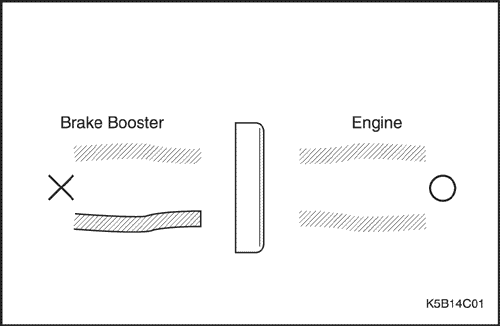
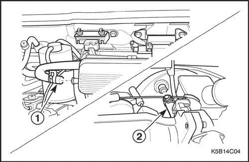
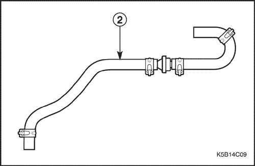
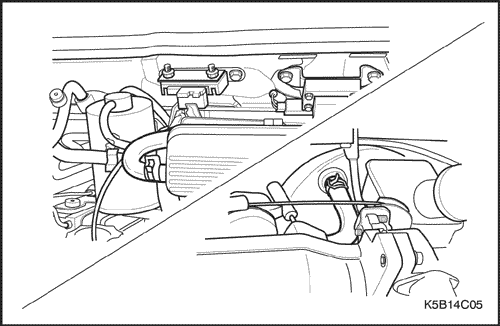
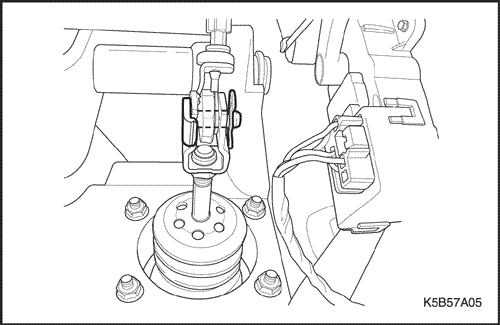
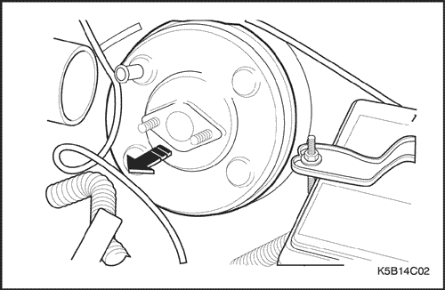
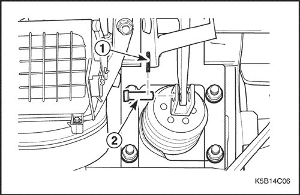
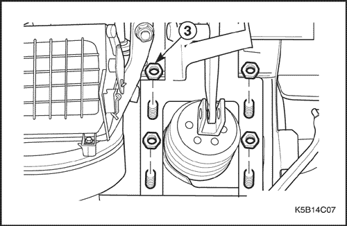
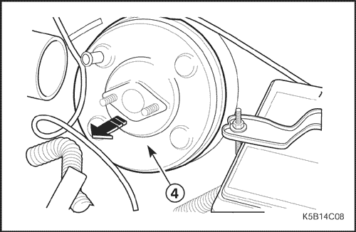
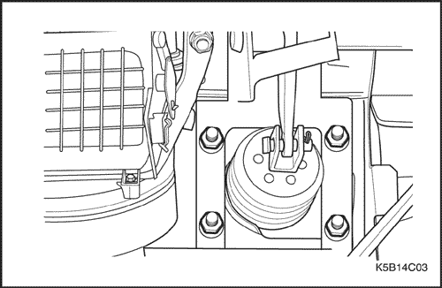

SECCIÓN 4C
SERVOFRENO
ESPECIFICACIONES
Especificaciones generales
| Aplicación | Unidad | Descripción |
| Sobrealimentador de potencia | Tipo | - | Suspensión de vacío |
| Diámetro | mm (pulg.) | 177.8 (7) |
| Relación del servofreno | - | 3.7 : 1 |
| Distancia entre el servofreno y el centro del taladro de la horquilla | mm (pulg.) | 96 (3.78) |
Especificaciones de apriete de la sujeción
| Aplicación | N•m | Árbol de transmisión izquierdo | Articulación |
| Tuercas que unen el servofreno al panel del salpicadero | 16 | 12 | - |
| Tuercas de fijación del cilindro maestro | 16 | 12 | - |
DIAGNÓSTICO
Comprobación funcional del sobrealimentador de potencia
- Con el motor apagado, elimine el vacío en el servofreno pisando el pedal de freno varias veces.
- Pise el pedal a fondo y manténgalo en esta posición.
- Ponga el motor en marcha.
- El servofreno funciona bien si el pedal baja aún más, debido a la fuerza adicional que se produce.
Si el pedal de freno no baja, es probable que haya una avería en el sistema de vacío (manguitos de vacío, válvula de retención, etc.) y debe comprobarse el sistema.
Si no se descubre ningún defecto durante la comprobación del sistema, la anomalía reside en el propio servofreno.
Comprobación funcional de la válvula de retención
- Retire el manguito de vacío.
- Aspire el manguito de vacío hacia el servofreno. Aspire, asimismo, el manguito de vacío hacia el motor.
- Tanto si pasa el aire a través de la válvula de retención como si no, sustituya la válvula de retención. Si sólo se produce aspiración desde el manguito de vacío hacia el motor, la válvula de retención funciona bien.



MANTENIMIENTO Y REPARACIÓN
servicio con vehículo en marcha

Manguito de vacío y válvula de retención
Procedimiento de desmontaje
- Retire el manguito de vacío.
- Retire el manguito de vacío del colector de admisión (1).

- Retire el manguito de vacío del servofreno (2).

procedimiento de montaje
- Conecte el manguito de vacío al servofreno.
- Conecte el manguito de vacío al colector de admisión.

Conjunto del servofreno (conducción a izquierdas)
Procedimiento de desmontaje
- Desmonte el conjunto del cilindro maestro. Consulte la sección 4B, Cilindro maestro.
- Retire el manguito de vacío del servofreno.
- Desmonte el servofreno.
- Enderece el pasador de aletas y quítelo.
- Retire el pasador de la horquilla.
- Quite las tuercas.

procedimiento de montaje
- Monte el servofreno con un nuevo pasador de aleta, un pasador de horquilla y sus tuercas.
Apretar
Apriete las tuercas hasta 16 N•m (12 lb-pie).
Importante: Cerciórese de que la distancia entre el servofreno y el centro del taladro de la horquilla es de 100 mm (3,94 pulg.).
- Monte el conjunto del cilindro maestro. Consulte la sección 4B, Cilindro maestro.
- Conecte el manguito de vacío al servofreno.
- Purgue el sistema de frenos. Consulte la Sección 4A, Frenos hidráulicos.

Conjunto del servofreno (conducción a derechas)
Procedimiento de desmontaje
- Desmonte el conjunto del cilindro maestro. Consulte la sección 4B, Cilindro maestro.
- Retire el manguito de vacío del servofreno.
- Desmonte el conjunto del panel de instrumentos. Consulte la sección 9E, Instrumentación/información para el conductor.
- Quite los tornillos de fijación de la unidad del evaporador y saque la unidad un poco. Consulte la sección 7B, Sistema de calefacción, ventilación y aire acondicionado de control manual.
- Desmonte el servofreno.
- Enderece el pasador de aletas y quítelo (1).
- Retire el pasador de la horquilla (2).


- Desmonte el servofreno (4).

procedimiento de montaje
- Monte el servofreno con un nuevo pasador de aleta, un pasador de horquilla y sus tuercas.
Apretar
Apriete las tuercas hasta 16 N•m (12 lb-pie).
Importante: Cerciórese de que la distancia entre el servofreno y el centro del taladro de la horquilla es de 100 mm (3,94 pulg.).
- Monte la unidad del evaporador con sus tornillos. Consulte la sección 7B, Sistema de calefacción, ventilación y aire acondicionado de control manual.
- Monte el conjunto del panel de instrumentos. Consulte la sección 9E, Instrumentación/información para el conductor.
- Conecte el manguito de vacío al servofreno.
- Monte el conjunto del cilindro maestro. Consulte la sección 4B, Cilindro maestro.
DESCRIPCIÓN GENERAL Y FUNCIONAMIENTO DEL SISTEMA
Sobrealimentador de potencia
Este servofreno es una unidad accionada - por vacío de un solo diafragma. En un modo de funcionamiento normal, sin aplicar los frenos de servicio, el servofreno accionado por - vacío actúa con el vacío existente a los dos lados de su diafragma. Cuando se aplican los frenos, la presión atmosférica actúa en uno de los lados de dicho diafragma para proporcionar la servoasistencia. Cuando se liberan los frenos, se corta la actuación de la presión atmosférica desde ese lado del diafragma. En ese momento, la fuente de vacío aspira el aire del servofreno a través de la válvula antirretorno de vacío.
Importante: Si se desmonta o se desconecta cualquier componente del sistema hidráulico, puede resultar necesario tener que purgar la totalidad o una parte del sistema de frenos.